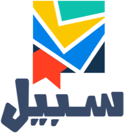

رؤيتها: الريادة والتميز في صناعة المحتوى الدعوي وإثرائه بلغات العالم. أصول لا تنتج محتوى فقط، بل تختبره يوميًا في آلاف الحوارات مع جمهور حقيقي، وهذا ما يجعله أقرب لاحتياج الناس.
15.7M
زيارة لمواقع أصول في 2025
60,513
مسلمًا جديدًا عبر مشروع الحوار الدعوي الإلكتروني
22,536
متخرجًا في دورات التعليم الشرعي للمسلمين الجدد
1,400
زائر شهريًا في المتوسط لمعرض جامع الراجحي لتعريف السياح بالإسلام
151,812حوارًا مباشرًا مع زوار من 113 دولة (مبادرة يا أيها الناس)
606 · 17 · 6بطاقة دعوية في 12 لغة، وكتابًا في 11 لغة، ومصحفًا مرئيًا مترجمًا (بوابة إفريقيا)
93.5%في الحوكمة، مع شهادة Great Place to Work وشهادة ISO
الأرقام الأربعة الأولى من موقع الجمعية، والبقية من التقرير الختامي لعام 2025.
المبادرات الاستراتيجية الست
إنه لقرآن كريمالموسوعة القرآنية ومعالم التفسير وترجمات المعاني.
على خطى الرسول ﷺمشاريع تقرّب السنة، منها دورة «نضرة» لحفظ 150 حديثًا في المسجد النبوي.
زدني علمًاتعليم العلم الشرعي، ومنه مشروع «سبيل» لتأهيل الدعاة ومعلمي الدعاة الناطقين بغير العربية.
يا أيها الناسالحوار الدعوي الإلكتروني، وبوت الحوار عبر واتساب TheIslam.chat، وبوابتا الهند وإفريقيا.
جرابمنتجات معلوماتية تعرّف بأحوال البلدان وثقافاتها وسبل دعوة أهلها.
مركز التميز الدعويبيت خبرة يستشرف توجهات العمل الدعوي ويبني ملتقيات ومجتمعات مهنية.

هذا ما نستطيع بناءه لأئمة الرابطة
مشروع «سبيل» نموذجًا: منظومة متكاملة لتأهيل الدعاة ومعلمي الدعاة الناطقين بغير العربية، من البناء العلمي إلى التقييم.
82جدارة للدعاة ومعلميهم في 6 مجالات
20 · 310مقررًا تعليميًا ودرسًا
23حقيبة تدريبية في 5,700 صفحة
305ساعات تدريبية و 292 نشاطًا فريدًا
1,150سؤال اختبار نهائي و 574 سؤالًا في مقياس الجدارات
3,600صفحة تعليمية
494مؤشر أداء مطبَّق
300مرجع دعوي و 18 برنامجًا جامعيًا رُوجع
90متخصصًا في فرق العمل
460متدربًا حضوريًا في 23 دورة